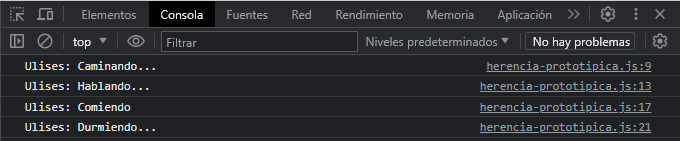
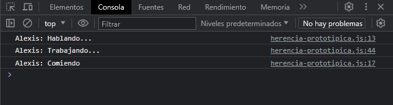
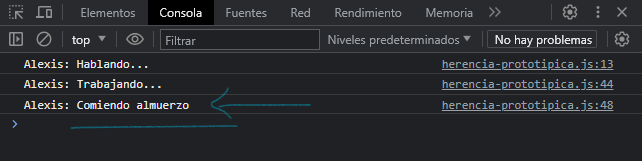

Introducción
A pesar de que a menudo esto se considera como una de las principales debilidades de JavaScript, el modelo de herencia de prototipos es de hecho mas potente que el modelo clásico. Por ejemplo, es bastante simple construir un modelo clásico a partir de un modelo de prototipos.
JavaScript no tiene "métodos" en la forma que los lenguajes basados en "clases" los define. En JavaScript, cualquier función puede agregarse a un objeto como una propiedad. Una función heredada se comporta como cualquier otra propiedad.
Veamos un ejemplo:
function Persona(nombre, apellido, edad, genero) {
this.nombre = nombre
this.apellido = apellido
this.edad = edad
this.genero = genero
}
Persona.prototype.caminar = function () {
console.log(`${this.nombre}: Caminando...`)
}
Persona.prototype.hablar = function () {
console.log(`${this.nombre}: Hablando...`)
}
Persona.prototype.comer = function () {
console.log(`${this.nombre}: Comiendo`)
}
Persona.prototype.dormir = function () {
console.log(`${this.nombre}: Durmiendo...`)
}
Creamos una función constructora llamada "Persona" que recibe 4 parámetros, ademas definimos métodos a su prototipo de la manera correcta. Hasta aquí nada nuevo.
const persona1 = new Persona("Ulises", "Flores", 24, true)
persona1.caminar()
persona1.hablar()
persona1.comer()
persona1.dormir()
Creamos una instancia llamada "persona1" con sus parámetros correspondientes, e invocamos los métodos que este tiene en su prototipo, teniendo como resultado en consola:
Heredando métodos con la cadena de prototipos
function Empleado(nombre, apellido, edad, genero, horario, salario) {
this.super = Persona
this.super(nombre, apellido, edad, genero)
this.horario = horario
this.salario = salario
}
Para heredar, creamos otra función constructora llamada Empleado, esta comparte las mismas propiedades y métodos de Persona. Como parámetros recibe los mismos de Persona y parámetros propios de Empleado.
Para heredar las mismas propiedades y métodos de Persona, escribimos this.super = Persona, primero definimos y luego asignamos los parametros de Persona con this.super(nombre, apellido, edad, genero), hacemos lo mismo con los parametros de Empleado.
Hasta aquí hemos iniciado con la herencia prototipica dentro de la función constructora que va heredar de Persona. Para terminar de heredar escribimos lo siguiente:
Empleado.prototype = new Persona()
Empleado.prototype.constructor = Persona
Lo que hacemos con estas lineas es crear una instancia de Persona basada en su prototipo. También en su propiedad constructor inicializamos los parámetros de Persona. Con esto ya podemos acceder a los métodos que hemos heredado de Persona. Solo nos queda hacer una nueva instancia de Empleado para acceder a los métodos heredados.
const persona2 = new Empleado("Alexis", "Soriano", 2, true, "9 a 9", 800.00)
persona2.hablar()
persona2.trabajar()
persona2.comer()

A la misma vez podemos crear métodos propios de Empleado:
Empleado.prototype.trabajar = function () {
console.log(`${this.nombre}: Trabajando...`)
}
También podemos sobre escribir una función cambiando su contenido:
Empleado.prototype.comer = function () {
console.log(`${this.nombre}: Comiendo almuerzo`)
}

En el proximo tema, veremos un set de palabras que introdujo ECMAScript 2015, un nuevo set de palabras reservadas que implementan clases. Aunque estos constructores lucen mas familiares para los desarrolladores de lenguajes basados en clases, aun asi no son clases. JavaScript sigue estando basado en prototipos. Los nuevos keywords incluyen class, constructor, static, extends y super.
Es esencial entender el modelo de prototipado por instancias antes de escribir código complejo que hace uso de esto.